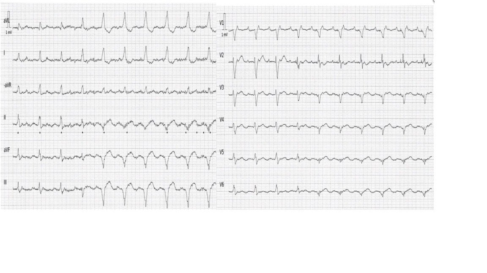
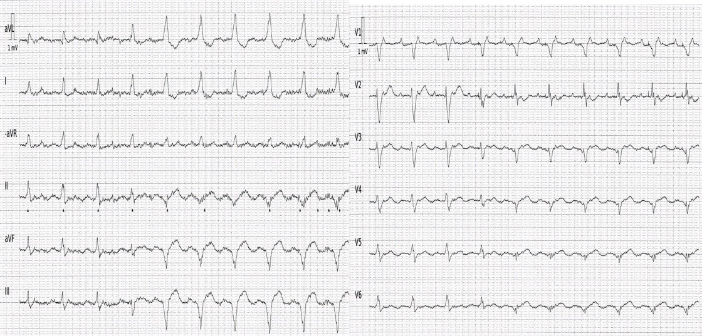
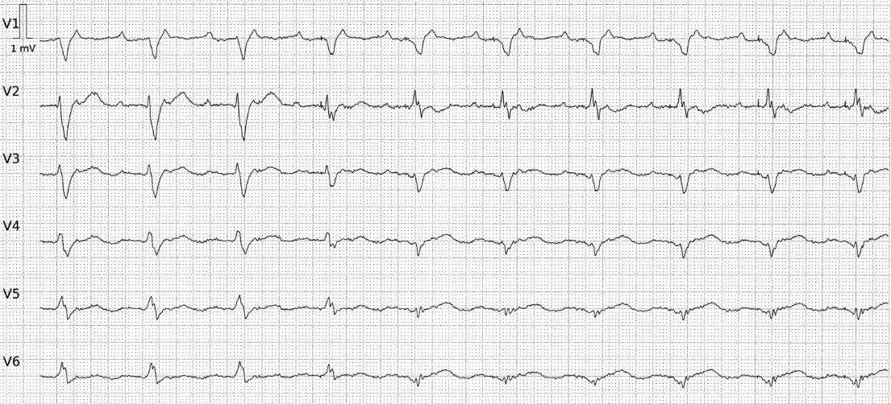
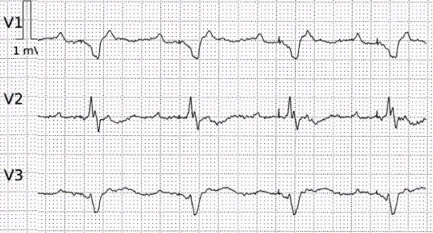
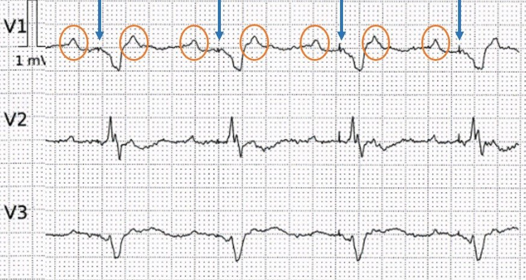
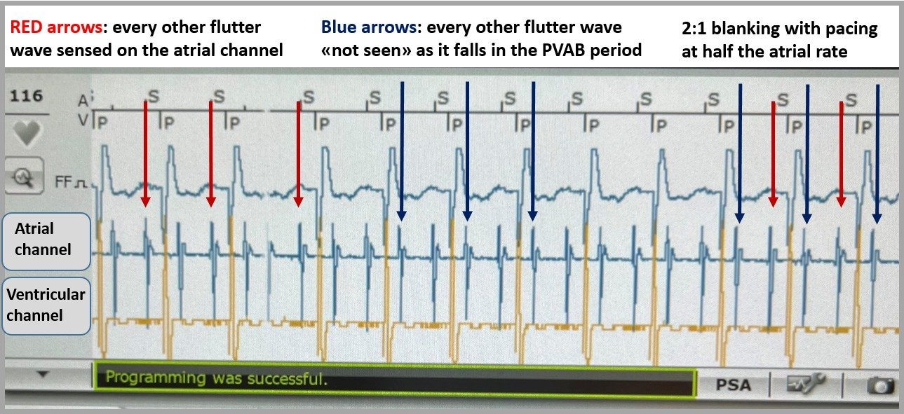
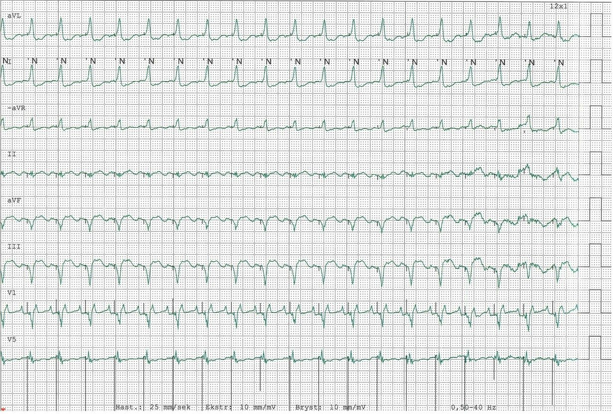
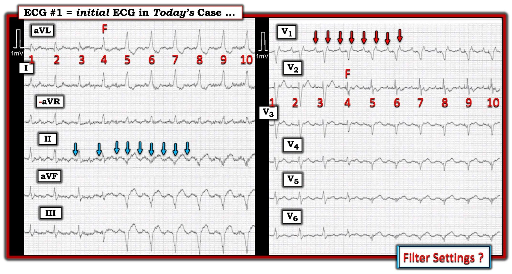

03/12/2025 — Bệnh nhân 87 tuổi khó thở và nhịp nhanh QRS rộng từng lúc
Bản dịch tiếng Việt của bài "An 87-year-old with dyspnea and intermittent WCT" – Dr. Smith’s ECG Blog. Giữ nguyên toàn bộ 7 hình ảnh của bản gốc.


Tác giả: Magnus Nossen
Bệnh nhân trong ca hôm nay là một phụ nữ 87 tuổi có tiền sử đặt máy tạo nhịp hai buồng và AFib. Bà nhập viện vì mệt yếu và khó thở tiến triển trong nhiều tuần. Khi đến viện, bệnh nhân có nhịp tim nhanh với tần số khoảng 120 nhịp/phút. Các dấu hiệu sinh tồn khác không có gì đặc biệt. Một điện tâm đồ trước viện đã được truyền về và được trình bày dưới đây. Bạn nghĩ gì về điện tâm đồ này?
Điện tâm đồ trước viện


Điện tâm đồ này cho thấy một nhịp đều với hai hình dạng QRS khác biệt rõ. Trong định dạng Cabrera, các chuyển đạo chi và chuyển đạo trước tim được ghi đồng thời. Ba nhát đầu có phức bộ QRS hẹp, trong khi nhát thứ tư có hình dạng QRS trung gian giữa các phức bộ trước đó và các phức bộ sau đó vốn rộng. Trục QRS trên mặt phẳng trán bình thường trong ba nhát đầu, nhưng sau đó chuyển sang trục hướng lên trên và sang trái.
Tôi quen xem điện tâm đồ ở tốc độ 50mm/s. Đặc biệt khi phân tích nhịp, tốc độ giấy nhanh hơn này có thể có lợi. Hình dưới đây cho thấy các chuyển đạo trước tim ở tốc độ 50mm/s, với độ phân giải/chất lượng tốt hơn hình đã nén ở trên. Nhịp là gì và điều gì giải thích sự thay đổi hình dạng QRS?
Các chuyển đạo trước tim ở tốc độ 50mm/s


Điện tâm đồ này cho thấy một nhịp nhĩ đều, với tần số nhĩ khoảng 240 nhịp/phút. Tần số thất bằng một nửa tần số nhĩ. Vậy đây là cuồng nhĩ 2:1. Nhưng còn nhát #4 thì sao? Điều gì giải thích sự thay đổi hình dạng của nhát này và của các phức bộ QRS tiếp theo?
Chúng ta hãy xem kỹ hơn các phức bộ QRS cuối ở các chuyển đạo V1-V3. Dưới đây tôi đã phóng to các chuyển đạo này.


Các dấu màu cam khoanh hoạt động nhĩ. Các mũi tên xanh lam chỉ vào gai tạo nhịp thất.


Như vậy — điện tâm đồ này cho thấy lúc đầu là cuồng nhĩ dẫn truyền 2:1, sau đó là tạo nhịp thất. Điều này giải thích sự chuyển trục ghi nhận trên điện tâm đồ ban đầu (hướng lên trên và sang trái, phù hợp với tạo nhịp thất phải). Nhát #4 trên điện tâm đồ ban đầu là một nhát hỗn hợp (tâm thất được khử cực một phần bởi dẫn truyền nội tại và một phần bởi máy tạo nhịp).
Nhưng tại sao máy tạo nhịp lại tạo nhịp ở tần số 120/phút? Máy tạo nhịp có bị trục trặc không? Đây có phải là nhịp nhanh do máy tạo nhịp không?
Xem ca nhịp nhanh do máy tạo nhịp này. Ventricular Fibrillation, ICD, LBBB, QRS of 210 ms, Positive Smith Modified Sgarbossa Criteria, and Pacemaker-Mediated Tachycardia (Rung thất, ICD, LBBB, QRS 210 ms, tiêu chuẩn Sgarbossa cải biên theo Smith dương tính, và nhịp nhanh do máy tạo nhịp)
Không, đây không phải là một ca điển hình của nhịp nhanh do máy tạo nhịp (pacemaker-mediated tachycardia, PMT), còn gọi là nhịp nhanh vòng lặp vô tận (endless loop tachycardia, ELT). Trong PMT, một nhát tạo nhịp thất gây dẫn truyền ngược dòng qua nút AV, tạo ra một nhát khử cực nhĩ. Sóng P ngược dòng này sau đó được máy tạo nhịp nhận cảm như thể đó là một hoạt động nhĩ nội tại, từ đó khởi phát một nhát tạo nhịp thất khác, rồi tiếp theo là một sóng P ngược dòng khác — tạo thành một “vòng lặp vô tận” tự duy trì của việc tạo nhịp. Hiện tượng này phổ biến hơn ở các thế hệ máy tạo nhịp trước đây. Các thiết bị hiện đại nay có các thuật toán hiệu quả giúp giảm đáng kể nguy cơ xuất hiện PMT.
Điều chúng ta thấy trên bản ghi hôm nay là nhận cảm dưới mức 2:1 chức năng (functional 2:1 undersensing). Hiện tượng này xảy ra khi máy tạo nhịp “không” phát hiện được mỗi sóng P thứ hai (cách một sóng) vì hoạt động nhĩ rơi vào giai đoạn xóa tín hiệu nhĩ sau thất (post-ventricular atrial blanking, PVAB).
Xóa tín hiệu nhĩ sau thất (PVAB) là một khoảng thời gian định thời của máy tạo nhịp sau một nhát thất được tạo nhịp hoặc được nhận cảm, trong đó máy tạo nhịp hoàn toàn bỏ qua các tín hiệu trên kênh nhĩ.
Xóa tín hiệu nhĩ sau thất (PVAB) là một tính năng của máy tạo nhịp hai buồng, được thiết kế để ngăn kênh nhận cảm nhĩ phát hiện các nhát tạo nhịp thất, sóng R trường xa (far-field), các hoạt động thất nội tại và sóng P ngược dòng. Cả PVAB và thời kỳ trơ nhĩ sau thất (post-ventricular atrial refractory period, PVARP) đều là các khoảng thời gian định thời được lập trình nhằm giảm nguy cơ nhịp nhanh do máy tạo nhịp. PVAB tạm thời chặn máy tạo nhịp không nhận cảm bất kỳ tín hiệu nhĩ nào ngay sau một hoạt động thất, dù được tạo nhịp hay được nhận cảm.
Tuy nhiên, nếu một nhát khử cực nhĩ do một rối loạn nhịp nhanh như nhịp nhanh nhĩ hoặc cuồng nhĩ xảy ra trong PVAB, máy tạo nhịp sẽ không phát hiện được nó. Điều này dẫn tới việc máy tạo nhịp chỉ nhận cảm được cách một hoạt động nhĩ, một tình huống gọi là xóa tín hiệu nhĩ 2:1 (2:1 atrial blanking). Ví dụ, với tần số nhĩ thực tế 240 nhịp/phút, xóa tín hiệu nhĩ 2:1 khiến máy tạo nhịp chỉ ghi nhận 120 nhịp/phút, có thể dẫn tới tạo nhịp thất như thể đang có nhịp nhanh xoang. Điều này giải thích những gì xảy ra trong ca hôm nay. Máy tạo nhịp “thấy” nhịp nhanh xoang và tạo nhịp thất ở tần số 120/phút.
Nhận định này đã được xác nhận bằng kiểm tra máy tạo nhịp (pacemaker interrogation). Ảnh chụp màn hình dưới đây từ bản tóm tắt kiểm tra máy tạo nhịp minh họa hiện tượng này.


Bản in theo dõi từ xa (telemetry)


Kết cục
Số liệu thống kê của máy tạo nhịp cho thấy, kể từ lần kiểm tra thiết bị gần nhất, nhịp nhanh với tần số tim khoảng 120 nhịp/phút hiện diện khoảng 75% thời gian, với tạo nhịp thất chiếm hơn 80% số nhát thất. Như vậy — xóa tín hiệu 2:1 đã là một vấn đề đáng kể ở bệnh nhân này. Máy tạo nhịp được lập trình lại sang chế độ VVIR ở tần số 70 nhịp/phút. Ở chế độ VVI, máy tạo nhịp sẽ bỏ qua hoàn toàn kênh nhĩ (và do đó sẽ không theo dõi bất kỳ hoạt động nhĩ nào). Tính năng lập trình này về thực chất biến máy tạo nhịp hai buồng thành máy tạo nhịp thất một buồng. Ở bệnh nhân hôm nay, thay đổi này không ảnh hưởng ngay tới tần số tim, vì bệnh nhân vẫn tiếp tục có cuồng nhĩ blốc 2:1 do blốc AV 2:1 nội tại.
Sau khi tăng liều thuốc chẹn beta, đạt được mức độ blốc AV cao hơn, và tần số thất được kiểm soát tốt. Nếu tăng liều thuốc chẹn beta mà không điều chỉnh cài đặt máy tạo nhịp — nhiều khả năng bệnh nhân này vẫn tiếp tục được tạo nhịp ở tần số bằng một nửa tần số nhĩ do xóa tín hiệu 2:1. Điều này sẽ đặt bà trước nguy cơ suy tim do cả nhịp nhanh lẫn do tạo nhịp gây ra.
Một chiến lược xử trí khác sẽ phù hợp nếu bệnh nhân trẻ hơn và ít bệnh đồng mắc hơn. Trong những trường hợp đó, kiểm soát nhịp bằng sốc điện chuyển nhịp, sau đó triệt đốt cuồng nhĩ là lựa chọn tốt hơn. Tuy nhiên, bệnh nhân này rất cao tuổi và suy yếu, siêu âm tim cho thấy giãn rõ cả nhĩ phải lẫn nhĩ trái; những yếu tố này khiến kiểm soát tần số là cách tiếp cận điều trị phù hợp hơn.
= = =
======================================
BÌNH LUẬN CỦA TÔI, bởi KEN GRAUER, MD (3/12/2025):
Xin ghi nhận công của Dr Nossen về phần giải thích trong bài hôm nay về PVAB (Xóa tín hiệu nhĩ sau thất — Post-Ventricular Atrial Blanking) — vốn chỉ là một trong số ngày càng nhiều các khái niệm tinh vi về máy tạo nhịp mà những thiết bị tuyệt vời này có thể thực hiện. Đã qua rồi cái thời dễ dàng xác định máy tạo nhịp có (hay không) hoạt động đúng như mong muốn. May mắn thay — lựa chọn hội chẩn tim mạch để kiểm tra máy tạo nhịp chính thức hiện đã sẵn có để đưa ra câu trả lời xác định.
- Nhiều người trong chúng ta (kể cả tôi) không phải là chuyên gia xử lý sự cố máy tạo nhịp (ngoài việc biết đến chân lý hay bị quên nhưng rất hữu ích rằng phần lớn thời gian — máy tạo nhịp đúng!). Vì vậy — phần lớn thời gian, nhiệm vụ chính của chúng ta là tìm ra tại sao bất chấp những dấu hiệu điện tâm đồ bất thường nào đang có — nhiều khả năng máy tạo nhịp vẫn hoạt động đúng.
- Như Dr. Nossen đã nhấn mạnh — ngay cả “kẻ thù truyền kiếp” trước đây của máy tạo nhịp ( = nhịp nhanh do máy tạo nhịp) cũng đã được loại bỏ phần lớn nhờ các thuật toán tinh vi được thiết kế để chống lại dẫn truyền nhĩ ngược dòng vốn rất hay khởi phát PMT trong quá khứ.
= = =
Bản ghi ban đầu hôm nay:
Và thế là tôi thấy mình không chắc chắn về những gì đang diễn ra trên điện tâm đồ ban đầu hôm nay (mà để cho rõ — tôi đã tái hiện và ghi nhãn trong Hình 1). Chúng ta được biết bệnh nhân nữ 87 tuổi hôm nay có tiền sử AFib, đã được cấy máy tạo nhịp hai buồng vì một chỉ định không rõ.
CÂU HỎI:
- Nếu bệnh nhân này có máy tạo nhịp — Tại sao chúng ta không thấy gai tạo nhịp trên điện tâm đồ ban đầu?
- Và, nếu bệnh nhân thực sự có máy tạo nhịp — Máy tạo nhịp có hoạt động đúng không?
= = =
Hình 1: Tôi đã ghi nhãn điện tâm đồ ban đầu trong ca hôm nay.


SUY NGHĨ CỦA TÔI:
Nhìn vào Hình 1, tôi sẽ không biết được rằng bệnh nhân hôm nay có máy tạo nhịp vĩnh viễn — đơn giản vì tôi không thấy gai tạo nhịp.
- Cài đặt bộ lọc không được hiển thị trên điện tâm đồ #1. Xin nhấn mạnh — có thể lý do không có thông tin về cài đặt bộ lọc dùng để ghi bản ghi này là vì phần ghi chú cài đặt bộ lọc đã bị mất trong quá trình nén điện tâm đồ vốn được ghi ban đầu ở 50 mm/giây. Dù sao đi nữa — điểm mấu chốt là quá thường xuyên tác động tiềm tàng của một cài đặt bộ lọc nhất định lên đặc điểm điện tâm đồ mà bạn muốn tối ưu bị bỏ qua!
- Chúng tôi đã định kỳ ôn lại vai trò tiềm tàng của cài đặt bộ lọc trong Dr. Smith’s ECG Blog (Xem Bình luận của tôi trong bài ngày 4 tháng Ba năm 2019, cùng nhiều bài khác). Gai tạo nhịp là một tín hiệu tần số cao. Do đó gai tạo nhịp có thể bị lọc mất (và vì vậy không thấy trên điện tâm đồ) nếu bộ lọc thông thấp được đặt ở giá trị quá thấp (tức là, dưới 150 Hz). Trong trường hợp này — có thể thấy một nhịp QRS rộng không có sóng P (và có thể dễ bị đọc nhầm thành nhịp bộ nối với hình ảnh LBBB hoặc thành nhịp thất).
= = =
Vậy, Điều gì đang diễn ra trên điện tâm đồ #1?
Như Dr. Nossen đã nêu — cùng 10 nhát được thấy ở cả chuyển đạo chi lẫn chuyển đạo ngực. Tôi thấy việc nhận biết điều này rất hữu ích — vì không có chuyển đạo đơn lẻ nào cho tất cả câu trả lời — nên việc thấy cả 10 nhát ở mỗi chuyển đạo trong 12 chuyển đạo cho phép tôi suy luận tối ưu các mối liên hệ khác nhau.
- Cũng như Dr. Nossen — “mắt” tôi lập tức bị thu hút bởi sự hiện diện của 2 hình dạng QRS khác nhau rõ rệt (thấy rõ nhất ở chuyển đạo aVL). QRS có vẻ hẹp ở 3 nhát đầu của bản ghi. QRS rộng ra từ nhát #5-đến-10.
- Như Dr Nossen đã nêu — nhát #4 có hình dạng QRS và sóng T trung gian giữa 3 nhát hẹp đầu tiên và 6 nhát rộng hơn sau cùng. Do đó, nhát #4 là một nhát hỗn hợp (“F“). Nhưng — Cái gì đang “hòa trộn”?
- Nhiễu đường nền đáng kể (đặc biệt ở các chuyển đạo chi) — khiến việc xác định hoạt động nhĩ trở nên khó khăn. Vì vậy — “mắt” tôi hướng tới chuyển đạo V1, là chuyển đạo tốt nhất trên điện tâm đồ #1 để đánh giá hoạt động nhĩ. Các mũi tên ĐỎ ở chuyển đạo này cho thấy hoạt động nhĩ 2:1 (tức là, nhịp nền là cuồng nhĩ, với sóng cuồng nhĩ ở tần số ~240/phút).
- Nhận ra hoạt động cuồng nhĩ đều ở chuyển đạo V1 — giúp tôi quay lại và xem xét lần nữa hoạt động nhĩ có thể có ở các chuyển đạo chi. Như các mũi tên XANH LAM — tôi tin rằng giờ tôi thực sự thấy hoạt động nhĩ 2:1 đều — ít nhất ở một phần của chuyển đạo II (mặc dù chỉ một lúc trước, nhiễu đường nền đã khiến tôi nghĩ rằng hoạt động nhĩ không đồng nhất suốt dải nhịp 10 nhát này).
- Điểm MẤU CHỐT: Tôi đã đo cẩn thận mọi khoảng bằng compa đo. Mọi khoảng đều không đổi suốt bản ghi. Mặc dù hình dạng QRS thay đổi — khoảng R-R không thay đổi suốt dải nhịp 10 nhát này. Ở chuyển đạo duy nhất có hoạt động nhĩ 2:1 rõ ràng ( = chuyển đạo V1) — cả khoảng P-P lẫn khoảng PR đứng trước mỗi phức bộ QRS đều không đổi. Điều này sẽ không xảy ra nếu các nhát rộng này có nguồn gốc thất. Do đó, mặc dù tôi không thể tự thuyết phục mình rằng có gai tạo nhịp — nhát hỗn hợp và việc QRS rộng ra từ nhát #5-đến-10 phải là kết quả của các phức bộ QRS được tạo nhịp.
- ĐIỀU CỐT LÕI: Mặc dù tôi không biết đến khái niệm PVAB trước khi đọc phần bàn luận của Dr. Nossen — “quá trình tư duy” nêu trên của tôi đã cho phép tôi nghi ngờ mạnh rằng việc QRS rộng ra (bắt đầu từ nhát #5) — nhưng không có bất kỳ thay đổi nào của các khoảng R-R, P-P và PR — hẳn phải là dấu hiệu của hoạt động máy tạo nhịp, với chức năng máy tạo nhịp có lẽ phù hợp xét tới việc duy trì tần số thất ổn định (dù nhanh).
- May mắn thay — kiểm tra máy tạo nhịp chính thức trong ca hôm nay đã xác nhận chức năng máy tạo nhịp phù hợp. Việc tăng liều thuốc chẹn ß, cùng với lập trình lại máy tạo nhịp sang chế độ VVIR đã khôi phục tần số thất phù hợp.
- Như rất thường gặp — máy tạo nhịp đã làm chính xác điều mà chương trình tài tình của nó được thiết kế để làm.
= = =
= = =